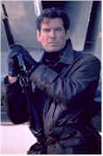
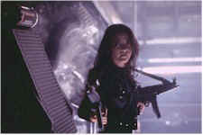
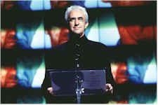

Contents | Features | Reviews | Books | Archives | Store |
 |
|
| Movie Credits | Buy It! |
Tomorrow Never Dies
Review by Carrie
Gorringe
Posted 19 December 1997
| Directed by Roger Spottiswoode Starring
Pierce Brosnan, Jonathan Pryce, Screenplay by Bruce Feirstein |
Let’s cut straight to the chase on Tomorrow Never Dies: it is, without exaggeration, the best Bond film in at least twenty-five years. We are at last firmly and mercifully removed from the grotesque mediocrities of former second-unit (and second-rate) director John Glen, who did so much to drive the Bond franchise straight into the ground during the late ‘70s and into the ‘80s, and the gradual, ineluctable emasculation of Bond as practiced by Moore (in his later, mugging period) and Dalton. We are past the tentative, if promising, first steps to resurrect the genre in Goldeneye. Tomorrow Never Dies has finally got the integration of action and machismo without misogyny absolutely perfect; it reoccupies the realm left by such Bond classics as Goldfinger and Diamonds Are Forever. Spottiswoode has proven himself to be a worthy directorial successor to former Bond master helmsmen Terence Moore and Guy Hamilton. Moreover, Brosnan makes good on his earlier promise as a new-but-not drastically-improved Bond, and the script reverberates with, for the most part, exciting action sequences and loads of wit. Bond is now officially back, and we have him. The only discordant note in the entire proceedings (actually, there are several) come from the throat of Sheryl Crow, who has the dubious honor of having created the worst-sounding title-credit song for the series since Lulu subjected the theme song from The Man With the Golden Gun to the most painful of deaths from slow vocal strangulation in 1974. Mercifully, Crow’s antics are cut short before permanent damage to good taste can set in and the fun can begin on cue.
"Welcome to my world crisis, Mr. Bond!", announces territorially-hungry media tycoon Elliot Carver (Pryce), once he has the British agent right where he thinks he wants him. Carver, who seems to take the premise of manufacturing the news just a little too seriously, and his henchmen are trying to start a little war between the Chinese and the British to increase the autarky of the Carver Global Media Group. There is, however, a little background information that will explain just how Bond found himself in this situation. After a British warship was sunk in the South China Sea, Bond was sent over to Carver’s headquarters in Hamburg to investigate. It seems that Bond and Carver’s beautiful wife, Paris (Hatcher), had been an item some time before her marriage, and there were high hopes in Her Majesty’s Secret Service that Bond can leverage this former affair of the heart to good advantage. Unfortunately, there were several sticky wickets raised from moment one: Paris was slow to forgive Bond’s transgressions and Carver was immediately suspicious of Paris’ protestations of innocence, not to mention his refusal to accept Bond’s cover story which places him in the role of banker. Then there was that mysterious Chinese "journalist", Mei Lin (Yeoh), whose investigative style seemed to have been exacted full cloth from Bernstein and Woodward, since she was always snooping around in unlikely places at the most inconvenient moments. Suspicions were raised once it was discovered that the lady was also no slouch when it comes to felling four thugs at one sitting, a talent that Bond could put to very good use.
Obviously, the real strength in a Bond film comes from the chemistry between Bond and his assistants as well as between Bond and the villain, and Tomorrow Never Dies does not disappoint. Yeoh is convincingly scrappy as the courageous Mei Lin, a woman who gives as good as she gets. Even when she and Bond find themselves joined at the arms during a moment of extreme peril, Thirty-Nine Steps-style, she does not retreat into a quivering ball of femininity and allow the big, strong male agent to take care of her; she demands that Bond allow her equal access to the action. Yeoh is not playing some butch, uber-female stereotype (the actress is too naturally graceful for such a comparison to be made and whoever cast her was smart enough to use this inherent grace as an antidote to stereotyping), but you still wouldn’t want to meet this "journalist’ in a dark alley if you had sinister intent. Pryce gives a performance replete with deliriously delicious evil as the mad Carver (one is loath to suggest that the character was modeled from what are presumably the worst traits of real-life media tycoons Ted Turner and Rupert Murdoch, but the film’s references to ambitions in the Chinese media market make said comparisons an irresistible parlor game). Pryce wisely chooses to emphasize the strong overlay of black humor in Carver’s personality over sheer ruthlessness, although the character is sufficiently nasty to keep the audience off guard. The only real flaw stems from the absolute lack of chemistry between Hatcher and Brosnan, though the acting technique of neither is to blame for the unfortunate situation; the two stars were not, apparently, the best of friends on the set, and the on-screen result is obvious. However, as with Ms. Crow, this relationship is quickly dealt with so as to minimize any negative impact upon the film. There are times when having a main character whose relationships with women have a half-life of ten minutes or less is a real advantage.
And, now, to the real concern for Bond fans: has Tomorrow Never Dies been turned into a two-hour infomercial for BMW, Ericsson, Smirnov Vodka, Visa and Heineken, given the $100 million contribution made by these and various other companies toward United Artists’ cash-strapped coffers? This threat has not really materialized; there is product placement, but, in good British tradition, it has been done with such discretion as to be reasonably invisible (indeed, after seeing the treatment meted out to several cases of Heineken by Bond, one wonders exactly what the company was paying for). However, the filmmakers have reached the limit of brand-name injection; any further attempts to overload future films with placements would lead to the prospect of tension-filled plots being reduced to mere entr’actes. No, the real threat to Bond, at this stage, comes not from the advertisers, but from the rumors that Thunderball producer Kevin McClory, in cahoots with former MGM (now Columbia) chief John Calley, may try to create a countervailing Bond franchise based upon the characters and situations to which McClory now holds the rights. This was tried once before, with 1983’s Never Say Never Again (a thinly-disguised remake of Thunderball not produced by McClory), an embarrassment in which the only suspense involved wondering whether or not Sean Connery’s toupee would remain intact during key moments. Perhaps McClory and Calley should take the hint from a potentially abysmal experiment in diversification and leave Bond in the hands of those who know him best.
Contents | Features | Reviews | Books | Archives | Store
Copyright © 1999 by Nitrate Productions, Inc. All Rights Reserved.